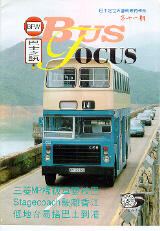
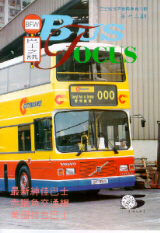
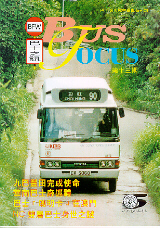
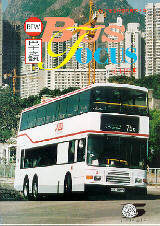
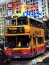
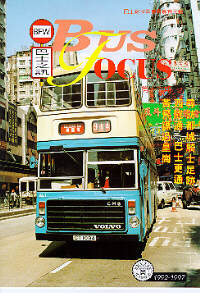
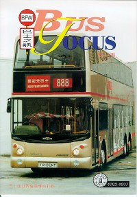
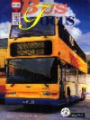

Previous Issues of BUS FOCUS
Previous Issues of BUS FOCUS
11th Bus Focus
第十一期巴士之訊


New era of
Super low floor

12th Bus Focus
第十二期巴士之訊
新機場準
交通網

13th Bus Focus
第十三期巴士之訊

14th Bus Focus
第十四期巴士之訊

15th Bus Focus
第十五期巴士之訊

16th Bus Focus
第十六期巴士之訊

17th Bus Focus
第十七期巴士之訊

18th Bus Focus
第十八期巴士之訊
19th Bus Focus
第十九期巴士之訊